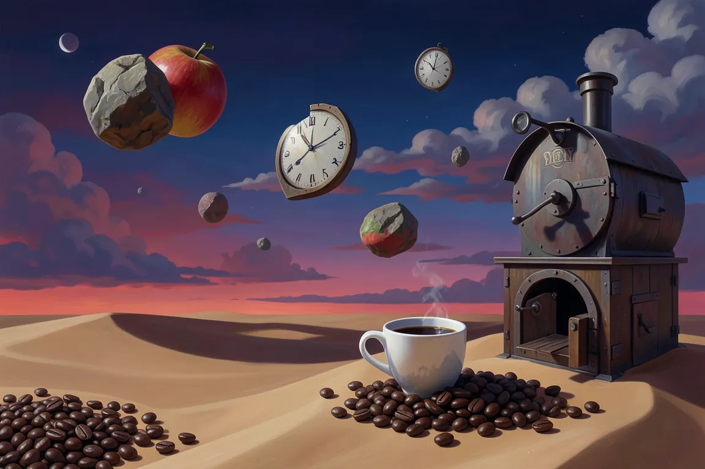

Impossible scenes with plain, calm rendering: floating objects, odd scale, melting forms, clouds in rooms and shadows that disagree. Logic bends while the interface stays usable.

Core thesis
Put the impossible on a quiet page: strange images, clear controls.
Design principles
Build each hero from one impossible scene: an object at the wrong scale, a floating form or a landscape in a room.
Render with soft, even light, long shadows (a 25° to 45° angle) and calm, clean edges; the strange part is what is shown, not how.
Use a dream palette: a pale sky (#BFD8EA), a warm sand (#E9D3B4), a deep blue (#1B2A55) and one red or orange accent (#E4572E).
Break scale and place on purpose: a hand 2x larger than a house, a door in a field, an eye in a cloud.
Keep UI plain on top of the scene: a sans at 16px, a 4.5:1 text contrast and buttons of 44px height.
Let one element break the grid by 40px to 160px, and add 1 shadow that points the wrong way.
Move slowly and drift: objects float 8px to 20px up and down over 4s to 8s; page change fades in 600ms to 900ms.